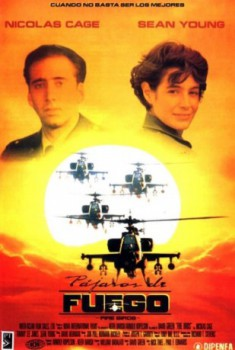

Fire Birds (1990)


Lo mejor acaba de mejorar

País:Estados Unidos, 85 minutos.
Idiomas:Inglés
GénerosAcción, Aventuras
Director/es:David Green
Guionistas:Nick Thiel, Paul F. Edwards
Códec de vídeo:Unknown
Número: 1174
TomatoMeter:

--

--
Clasificación IMDb:


4.8/10 (7.4K votos)
Certificación:
Argumento:
Una unidad de helicópteros de combate estadounidense es enviada a la jungla peruana para luchar contra el narcotráfico.
Reparto
Nicolas Cage (Como Jake Preston), Tommy Lee Jones (Como Brad Little), Sean Young (Como Billie Lee Guthries), Bryan Kestner (Como Breaker), Dale Dye (Como A.K. McNeil)
Medio: Archivo de video,
Localización: D:\PELICULAS\ACTORES\Nicolas Cage\Pajaros de Fuego (Nicolas Cage)\Pajaros de Fuego [1990].mp4
Prestado: No
Rel. aspecto: Unknown